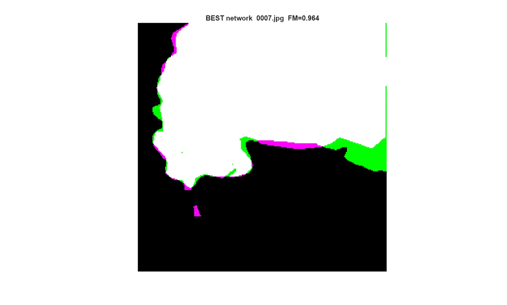
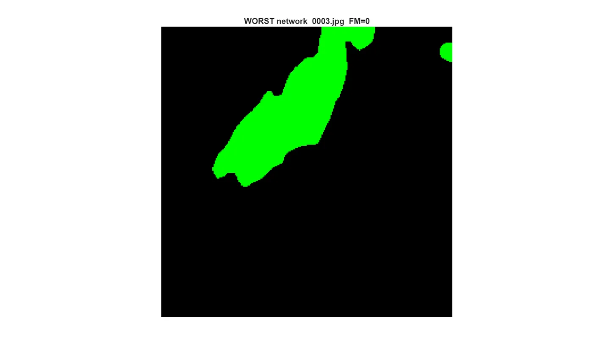
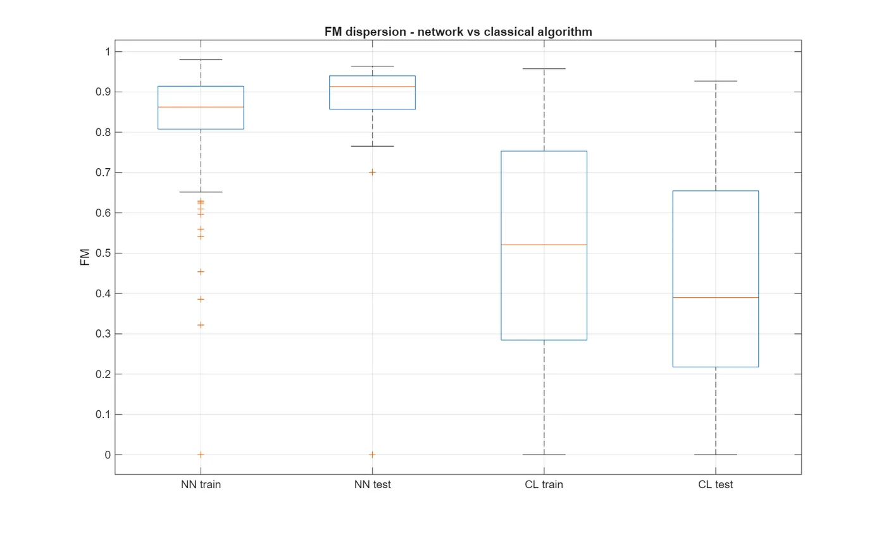
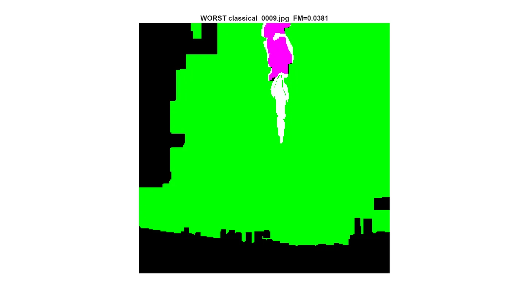

02 · Computer vision · Deep learning
Fire and Smoke Semantic Segmentation
Label every pixel as fire or smoke against background two different ways, then compare them on identical data with an identical metric. The point of the project is the controlled comparison, not either method on its own.

Headline result
Mean test F-measure 0.8507 for the network against 0.4421 for the classical baseline on identical data. Roughly double. Median network F-measure on test was 0.913.
What the project was given
The dataset arrived as a Roboflow COCO segmentation export: 201 images, already 256 by 256, which is exactly the network input size, so nothing had to be rescaled. The export carries polygon annotations and no mask image files at all, which is why the first piece of work was recovering binary masks from polygon coordinates.
The split was 141 training, 40 validation and 20 test images, and the course protocol was train and test only. The team boundary was set at the start: my teammate owned the classical colour-threshold and morphology track, I owned the deep-learning track, and both of us were examined on both.
What the goal was
Solve one binary segmentation task two ways and benchmark them head to head on identical data with an identical metric. The comparison is the deliverable; neither method on its own is.
There was no numeric acceptance threshold. The course set no target F-measure, so the result below has no pass mark to be read against, only the other method.
What I did
I owned the deep-learning workstream end to end: the dataset pipeline that recovers binary masks from COCO polygon annotations, network setup and training, inference and evaluation on the held-out test set, the results scripts and comparison figures, the live demo driven in front of the professor, and the label-quality investigation below.
DeepLabv3+ on a ResNet-18 backbone, transfer learning, inverse-frequency class weighting, across a 141 / 40 / 20 split.
My teammate built the classical colour-threshold and morphology baseline. It is his work and it is the thing my network is measured against.
seg = anns(a).segmentation; % jsondecode: numeric vector if one polygon, cell array if several if isnumeric(seg); seg = {seg(:)'}; end for pp = 1 : length(seg) poly = seg{pp}(:)'; x = poly(1:2:end); y = poly(2:2:end); GT = GT | poly2mask(x,y,H,W); % from polygon to mask end
lgraph = deeplabv3plusLayers(imageSize, numClasses, "resnet18"); % class balancing between background and foreground tbl = countEachLabel(pximds); frequency = tbl.PixelCount / sum(tbl.PixelCount); classWeights = 1./frequency; pxLayer = pixelClassificationLayer('Name','labels', ... 'Classes',tbl.Name,'ClassWeights',classWeights); lgraph = replaceLayer(lgraph,"classification",pxLayer);
What went wrong, and the fix
Two things, and the second one turned out to matter more than the network.
The first was class imbalance. Fire and smoke occupy a small fraction of the pixels, so training pixel accuracy sat around 95 % while the network was still missing small fires. Accuracy was measuring the background. I weighted the loss by inverse class frequency and reported F-measure rather than accuracy, which is the metric that actually moves when a small fire is missed.
The second was the metric itself, before the results were. The first evaluation run returned a mean F-measure of NaN. A test image with zero true positives makes the composed formula evaluate 0/0, and one NaN silently poisons the mean across the whole test set. I replaced the composition with the direct F-measure expression and wrote explicit conventions for the degenerate cases: two empty masks score 1, and a miss or a false alarm against an empty counterpart scores 0.
Neither fix carried a recorded trade-off.
The finding I kept in the results
Chasing that NaN led somewhere more useful than the metric. The image behind it visibly contains fire but carries no annotations at all in the source JSON, so its reference mask is empty and both methods correctly score zero against it.
That single faulty ground truth is worth about 4.48 percentage points of the test mean under an exclusion counterfactual. I kept it in the results and reported it as a data-quality finding rather than dropping the image.



What was not overcome
The naming of the two secondary evaluation columns is unresolved. Two project documents disagree about which column is which, so F-measure is the only metric quoted anywhere on this page.
The faulty label was reported, not repaired. It stayed in the test set, which is why the headline mean is the lower number.
The archive is a results package, not a runnable project, so the metrics cannot be regenerated from what was preserved.
Scope and limitations
- Small dataset: 141 training images and only 20 test images. Single-image effects move the mean noticeably, which is exactly what the 4.48 pp finding demonstrates.
- The 40-image validation split was never used. The course protocol was train/test only, so there are no validation curves and no in-training overfitting detection.
- Offline only. No deployment, no real-time inference, no video, no production validation.
- F-measure is the only metric quoted here. The precision/recall column naming is inconsistent between two source documents, so those values are deliberately withheld.
- The archived package is a results archive, not a runnable project. The MATLAB scripts are included, but the 201 source images, the processed dataset, the trained network and the result MAT files are not, so the reported metrics cannot be re-executed from this archive as delivered.
- The fire-versus-smoke sub-classification step is an unvalidated heuristic.